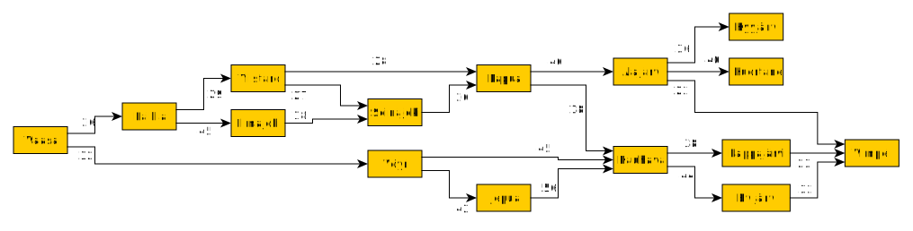

AI-Tools: Graph search#
Finding a way between towns#
To actually solve the navigation problem, two things are needed:
Knowledge and
Algorithm
For human beings, a map is the model of the World, which include the knowledge needed for navigation. The ment for navigation shows the location of the cities and the roads connecting them. The map is printed in scale, and therefore the distances between the cities can be measured from the map.

A human navigator have learned how to use this data model for finding the best routes, estimate the distances, and selecting optimal roads. We are so used to using maps (at least we were before starting to use computers for navigation) that we hardly think that we are carrying out a navigation algorithm in our heads when selecting the optimal roads. To be able to implement an artificial agent for navigation, it is usefull to think how a humang agent works, and then try to implement it with a computer. How would you explain how you navigate?
Navigation algorithm for a computer#
Representing knowledge#
Maps are useful to both computers and human beings, they just need to be presented in totally different form for computer.
For computer to understand, knowledge has to be stored in the memory. Since the memory of a computer is just a huge array of memory locations, some sort of framework for organizing the data in the memory is necessary. This kind of framework or ontology describing what data is stored in which location, what the data means and how it can be accesses, is called as a data structure.
A simplest data structure is a variable:
x=2
The command above tells computer to reserve a location in a memory, store an integer 2 into it and call the memory location with a symbolic name x. When the data is needed in the future, the computer just reads the memory location which name is x to be able to use the value, and it can also write a new value to the same location.
A slightly more complex data structure would be the list of names of the locations:
towns = ['Vaasa', 'Seinäjoki', 'Vimpeli', 'Ylistaro', 'Lapua']
This time, the computer reserves memory for three strings, and calls the memory location with a same towns. The name of the second town in the list of towns can be easily read or written.
A road between towns can be stored as a triplet of (source town, destination town, and a distance), for example:
('Vaasa', 'Laihia', 26)
It would mean that there is a road between Vaasa to Laihia, and obviously from Laihia to Vaasa, and it’s lenght is 26 km.
This data structure would not be very efficient, since it would require searching through the full list of towns for every branch in every crossroads.
A map can be more efficiently described as a graph:

In the graph above, the nodes are the towns or municipalities, and the edges are the main roads connecting the towns together. The weights on the edges describes the distances between the towns.
The graph above describes both the topology and the quantitative data needed for a computer for searching the route. What would be a good algorithm to search the map above? Both Breadth first search and depth first search would efficiently find the path.
Question?
In which order breadth first and depth first searches would list the paths. Which one would probably find a better path, or is there any difference?
Question?
What would be obstacles for both methods, and how they could be overcome?
Question?
What would be appropriate heuristic function in the A* search, and how does that help?
How to encode this graph for a computer?#
# A template for all nodes (actually a class)
class Node:
name=''
neighbors=[]
def __init__(self, name):
self.name=name
# Implement all nodes based on the Node class (template)
# The instances of the template are called as objects
vaasa=Node('Vaasa')
laihia=Node('Laihia')
voyri=Node('Vöyri')
ilmajoki=Node('Ilmajoki')
ylistaro=Node('Ylistaro')
seinajoki=Node('Seinäjoki')
voyri=Node('Vöyri')
lapua=Node('Lapua')
jepua=Node('Jepua')
alajarvi=Node('Alajarvi')
kyyjarvi=Node('Kyyjarvi')
kuortane=Node('Kuortane')
kauhava=Node('Kauhava')
lappajarvi=Node('Lappajärvi')
evijarvi=Node('Evijärvi')
vimpeli=Node('Vimpeli')
# Then the implementation of the connection between the towns (edges)
vaasa.neighbors=[(voyri, 32), (laihia, 26)]
laihia.neighbors=[(ilmajoki, 45), (ylistaro,29)]
voyri.neighbors=[(jepua, 42),(kauhava, 56)]
ilmajoki.neighbors=[(seinajoki, 18)]
ylistaro.neighbors=[(seinajoki,27), (lapua, 28)]
seinajoki.neighbors=[(lapua, 26)]
voyri.neighbors=[(kauhava, 45),(jepua, 42)]
lapua.neighbors=[(kauhava, 18), (alajarvi, 46)]
jepua.neighbors=[(kauhava, 56)]
alajarvi.neighbors=[(kyyjarvi, 36), (vimpeli, 22), (kuortane, 40)]
kyyjarvi.neighbors=[]
kuortane.neighbors=[]
kauhava.neighbors=[(lappajarvi, 38), (evijarvi, 44)]
lappajarvi.neighbors=[(vimpeli, 23)]
evijarvi.neighbors=[(vimpeli, 32)]
vimpeli.neighbors=[]
# Now we can list the beginning of the graph
start=vaasa
print("Starting the search from", start.name)
print("The neighbors are")
for neighbor, distance in start.neighbors:
print("\t-", neighbor.name, "\t:", distance, "km")
Starting the search from Vaasa
The neighbors are
- Vöyri : 32 km
- Laihia : 26 km
How to search the path#
Both depth first and bredth first algorithms are possible. In depth first search, it is easier to keep the current search path in the memory. In breadth first search, all parallel paths needs to be kept in memory at the same time, which requires more complex data structure and more memory. An example of depth first search algorithm is the following:
Start from the starting node, and repeat following phases until target is found:
If there is still unvisited neighbour cities left:
take first unvisited neighbour and add it into the stack of cities along current path
Enter into that neighbour and continue
If there is no more unvisited neighbour cities under current path
remove the latest city from the stack
come backwards to the previous city and continue
The stack describing the current path could look as follows in an example search case
Vaasa -> Laihia
Vaasa -> Laihia -> Ylistaro
Vaasa -> Laihia -> Ylistaro -> Lapua
Vaasa -> Laihia -> Ylistaro -> Lapua -> Alajärvi
Vaasa -> Laihia -> Ylistaro -> Lapua -> Alajärvi -> Kyyjärvi (no neighbors, go back)
Vaasa -> Laihia -> Ylistaro -> Lapua -> Alajärvi -> Kuortane (no neighbors, go back)
Vaasa -> Laihia -> Ylistaro -> Lapua -> Alajärvi -> Vimpeli (Target found path is in the stack)
This depth first implemenation is below#
For the following implementation, stack (LIFO) and FIFO data-structures are needed. They are shown in the following Figure. In python, a normal list can be used as FIFO or Stack data structure. In both cases new entries are inserted in the end of the list, using append() or push() -functions. When the list is used as a stack, the sample inserted last, is popped out, using pop() command, and when the list is used as LIFO, the first value in the list is popped out with pop(0) -function call.

# Stack of town within the path
path_stack = []
# Queue of unhandled towns, and the depth, and distance
queue = [(vaasa, 1, 0)]
# Current depth
depth=0
# Repeat until we have more town to visit
while len(queue)>0:
# Take new node and it's depth from the queue
current_node, new_depth, d = queue.pop()
# If the current_node is deeper than previous, insert the new node in the stack
# Insert also the distance from the previous node
if new_depth>depth:
path_stack.append((current_node, d))
else:
# If the solution was not found, and the algorithms is coming back
# then the previous entries needs to be popped out from stack,
# and the current node inserted instead
for i in range(depth-new_depth+1):
path_stack.pop()
path_stack.append((current_node,d))
# update the current depth
depth=new_depth
# Check is the solution was found, if it was, break the loop
if current_node==vimpeli:
break
# Othervise, add the neighbours of the current node to the queue of nodes
# yet to be processed. Use depth one deeper than current node
# The distance from the current node is also appended
for neighbor, distance in current_node.neighbors:
queue.append((neighbor, depth+1, distance))
# Print the result
distance=0
for node,d in path_stack:
distance=distance+d
print("%10s : %4d km" % (node.name, distance))
Vaasa : 0 km
Laihia : 26 km
Ylistaro : 55 km
Lapua : 83 km
Alajarvi : 129 km
Vimpeli : 151 km
Question?
Is this an optimal solution? How to find other solutions?
Recursive solution#
Recursive functions suit naturally for graph search, because the problem is inherently recursive. They are not very often used, however, because they require more memory than loop-algorithms due to recursive function calls. Some programming languages, especially from LISP-family have special implementation for tail-recursion, and in those languages recursion is more often used.
The idea of recursive solution is very simple. Since the problem for finding a route from Vaasa to Vimpeli is non-trivial, try to go to the next town closer to Vimpeli, such as Laihia, and try to find the route to Vimpeli from there. Since that is also non-trivial, go from Laihia to the next town, like Ilmajoki, and try to find route from there. Repeat until you are in Vimpeli, and then the solution is trivial. During the descend, all steps are stored in the stack and therefore the the path is now found. If the algorithm ends up into a dead end, then it backtracks one step back, and removes the latest failed step from the stack of current path.
Here is a recursive solution, which finds a route from Vaasa to Vimpeli. Because it always takes the last added town from the stack, it is a depth first approach. It can be easily modified to find all possible paths.
# Define a helper function for plotting
def printQandD(q):
distance=0
print(" Queue: [", end='')
for node,d in q:
print(node.name, end=', '),
distance+=d
print("] = ", distance, end='\n')
# Acrtual recursive search
def RecursiveDFS(stack):
current_node, distance=stack[-1]
if current_node==vimpeli:
printQandD(stack)
return stack
for neighbor, distance in current_node.neighbors:
retval = RecursiveDFS(stack + [(neighbor, distance)])
if retval:
# This return breaks the search. If this is removed
# it continues to remove all possible path
return retval
return False
# Start the search and print the results
path=RecursiveDFS([(vaasa,0)])
print("Loppu")
distance=0
for node, d in path:
distance=distance+d
print("%10s : %4d km" % (node.name, distance))
Queue: [Vaasa, Vöyri, Kauhava, Lappajärvi, Vimpeli, ] = 138
Loppu
Vaasa : 0 km
Vöyri : 32 km
Kauhava : 77 km
Lappajärvi : 115 km
Vimpeli : 138 km
Recursive breadth first solution#
The core is otherwise the same as Depth first, but now the latest solution is taken from the bottom of the queue (FIFO). Therefore it expands nodes bredth first manner.
This implementation does not keep track fo the current paths stack, and it does not yet find the actual path. But this feature can be added to the implementation. The current implementation visits all towns and lists them in Breadth first search order.
##The implementation of the breadth first search (BFS) is now simply the following
def printQueue(q):
print(" Queue: [", end='')
for node in q:
print(node.name, end=', '),
print("]", end='\n')
def bfs(start_node):
queue = [start_node]
explored = []
while queue:
printQueue(queue)
current_node=queue.pop(0)
if current_node not in explored:
explored.append(current_node)
for neighbor, distance in current_node.neighbors:
queue.append(neighbor)
return explored
path=bfs(vaasa)
printQueue(path)
Queue: [Vaasa, ]
Queue: [Vöyri, Laihia, ]
Queue: [Laihia, Kauhava, Jepua, ]
Queue: [Kauhava, Jepua, Ilmajoki, Ylistaro, ]
Queue: [Jepua, Ilmajoki, Ylistaro, Lappajärvi, Evijärvi, ]
Queue: [Ilmajoki, Ylistaro, Lappajärvi, Evijärvi, Kauhava, ]
Queue: [Ylistaro, Lappajärvi, Evijärvi, Kauhava, Seinäjoki, ]
Queue: [Lappajärvi, Evijärvi, Kauhava, Seinäjoki, Seinäjoki, Lapua, ]
Queue: [Evijärvi, Kauhava, Seinäjoki, Seinäjoki, Lapua, Vimpeli, ]
Queue: [Kauhava, Seinäjoki, Seinäjoki, Lapua, Vimpeli, Vimpeli, ]
Queue: [Seinäjoki, Seinäjoki, Lapua, Vimpeli, Vimpeli, ]
Queue: [Seinäjoki, Lapua, Vimpeli, Vimpeli, Lapua, ]
Queue: [Lapua, Vimpeli, Vimpeli, Lapua, ]
Queue: [Vimpeli, Vimpeli, Lapua, Kauhava, Alajarvi, ]
Queue: [Vimpeli, Lapua, Kauhava, Alajarvi, ]
Queue: [Lapua, Kauhava, Alajarvi, ]
Queue: [Kauhava, Alajarvi, ]
Queue: [Alajarvi, ]
Queue: [Kyyjarvi, Vimpeli, Kuortane, ]
Queue: [Vimpeli, Kuortane, ]
Queue: [Kuortane, ]
Queue: [Vaasa, Vöyri, Laihia, Kauhava, Jepua, Ilmajoki, Ylistaro, Lappajärvi, Evijärvi, Seinäjoki, Lapua, Vimpeli, Alajarvi, Kyyjarvi, Kuortane, ]
Solution using Networkx graph library#
The previous implementations have shown approaches for implementing graph searching. But there are also many libraries with ready made implementations of various graph search algorithms. Networkx is one of the most often used graph libraries in Python.
I have collected some additional information about the towns between Vaasa and Vimpeli, for example the coordinates of the towns, which can be used for calculating the direct line distances between them to define a heuristic function for guiding the graph search for most promising directions.
Name Northing Easting
0 Akaa 61.167145977 23.865888764
1 Alajärvi 63.001273254 23.817522812
2 Alavieska 64.166646246 24.307213479
3 Alavus 62.586161997 23.616600589
4 Asikkala 61.172512361 25.549142484
5 Askola 60.530210718 25.598880612
...
The following function calculates the coordinates of the towns based on their longitudes and latitudes.
# This code calculates the coordinates of the towns. It is only needed for nice plotting
import pandas as pd
from math import sin, pi
Coordinates=pd.read_csv('data/coordinates.csv')
def getCoordinates(Location, Theta=63.092589):
Ps=Coordinates[Coordinates.Name==Location]
if len(Ps)==0:
print("Now location %s found!" % Location)
return None
P=Ps.iloc[0]
# Earth radius / km
R=6371.0 # Average
Rp=6356.8 # Polar
Re=6378.1 # Equatorial
#
# Earth radius in current Northing
#Theta=P.Northing/180*pi
#Theta=63.092589
r=sin(pi/2-Theta/180*pi)*Re
#
y = (P.Northing/180*pi)*Rp
x = (P.Easting/180*pi)*r
return (x,y)
print(getCoordinates('Vaasa'))
print(getCoordinates('Seinäjoki'))
(np.float64(1088.9504471170537), np.float64(6999.93912935637))
(np.float64(1150.7335047599795), np.float64(6965.997532375281))
Encoding the information#
The biggest work when using the Networkx all other similar libraries, is to encode the information for the library. In the code below, the libraries are first imported into the workspace, and empty graph is created.
Then the nodes are added from the list of towns using for-loop. The coordinates of the towns are added in each node (the pos attribute) to be able to plot the graph in actual scale.
The roads between the towns are added as edges. The lengths of the roads are added as weigths of edges.
The networx library includes convenient funtions for plotting the graph. The weights of the edges can be plotted in the edges and the pos-attribute is now used to place the towns in a coordinate system.
# This code generates the graph
import networkx as nx
import matplotlib.pyplot as plt
# Create an empty directed graph
M=nx.DiGraph()
# List of towns added as nodes
Towns=['Vaasa', 'Laihia', 'Vöyri', 'Ilmajoki', 'Ylistaro', 'Seinäjoki',
'Vöyri', 'Lapua', 'Jepua', 'Alajärvi', 'Kyyjärvi', 'Kuortane',
'Kauhava', 'Lappajärvi', 'Evijärvi', 'Vimpeli']
# Add the nodes and store the coordinates of the towns as well, for nice plotting
for town in Towns:
M.add_node(town, pos=getCoordinates(town))
# Add the edges, and their weights = distances
M.add_edge('Vaasa', 'Laihia', weight=26)
M.add_edge('Vaasa', 'Vöyri', weight=32)
M.add_edge('Laihia', 'Ilmajoki', weight=45)
M.add_edge('Laihia', 'Ylistaro', weight=29)
M.add_edge('Vöyri', 'Jepua', weight=42)
M.add_edge('Vöyri', 'Kauhava', weight=56)
M.add_edge('Ilmajoki', 'Seinäjoki', weight=18)
M.add_edge('Ylistaro', 'Seinäjoki', weight=27)
M.add_edge('Ylistaro', 'Lapua', weight=28)
M.add_edge('Seinäjoki', 'Lapua', weight=26)
M.add_edge('Vöyri', 'Kauhava', weight=45)
M.add_edge('Vöyri', 'Jepua', weight=42)
M.add_edge('Lapua', 'Kauhava', weight=18)
M.add_edge('Lapua', 'Alajärvi', weight=46)
M.add_edge('Jepua', 'Kauhava', weight=56)
M.add_edge('Alajärvi', 'Kyyjärvi', weight=36)
M.add_edge('Alajärvi', 'Vimpeli', weight=22)
M.add_edge('Alajärvi', 'Kuortane', weight=40)
M.add_edge('Kauhava', 'Lappajärvi', weight=38)
M.add_edge('Kauhava', 'Evijärvi', weight=44)
M.add_edge('Lappajärvi', 'Vimpeli', weight=23)
M.add_edge('Evijärvi', 'Vimpeli', weight=32)
# Plot the graph nicely in scale
fig=plt.figure(figsize=(8,8))
pos=nx.get_node_attributes(M,'pos')
nx.draw_networkx(M, pos=pos, node_color='orange')
labels = nx.get_edge_attributes(M,'weight')
nx.draw_networkx_edge_labels(M,pos,edge_labels=labels)
print("Graph is ready")
---------------------------------------------------------------------------
ModuleNotFoundError Traceback (most recent call last)
Cell In[6], line 3
1 # This code generates the graph
----> 3 import networkx as nx
4 import matplotlib.pyplot as plt
6 # Create an empty directed graph
ModuleNotFoundError: No module named 'networkx'
Asking questions from the graph#
list(M.neighbors('Kauhava'))
['Lappajärvi', 'Evijärvi']
#nx.depth_first_search.dfs_successors(M,'Vaasa')
for node in nx.breadth_first_search.bfs_successors(M, 'Vaasa'):
print(node)
('Vaasa', ['Laihia', 'Vöyri'])
('Laihia', ['Ilmajoki', 'Ylistaro'])
('Vöyri', ['Jepua', 'Kauhava'])
('Ilmajoki', ['Seinäjoki'])
('Ylistaro', ['Lapua'])
('Kauhava', ['Lappajärvi', 'Evijärvi'])
('Lapua', ['Alajärvi'])
('Lappajärvi', ['Vimpeli'])
('Alajärvi', ['Kyyjärvi', 'Kuortane'])
The breadth first ordering of the towns can be used to find a path from Vaasa to Vimpeli, by starting from Vimpeli to the parent Lappajärvi, and so on the reverse order up to Vaasa.
Vaasa -> Vöyri -> Kauhava -> Lappajärvi -> Vimpeli
The path is unique in this ordering but not necessary optimal, since the weights are not taken into account.
A* algorithm#
More optimal path minimizing the weights can be found using A* algorithm. If no heuristic function is given, the algorith is using Dijkstra’s algorithm. It finds an optimal path, but it may be slow for very large graphs, because Dijkstra’s algorith is uninformed search algorithm.
print("Shortest path :", nx.astar_path(M, 'Vaasa', 'Vimpeli'))
print("Shortest path :", nx.astar_path(M, 'Vaasa', 'Vimpeli'))
print("Shortest distance :", nx.astar_path_length(M, 'Vaasa', 'Vimpeli'), "km")
Shortest path : ['Vaasa', 'Vöyri', 'Kauhava', 'Lappajärvi', 'Vimpeli']
Shortest distance : 138 km
The A* algorith is informed search, which is made for efficient using so called heuristic function. In case of navigation, the natural heuristic function is to calculate the line sight distance remaining to the target, and use that to judge the fitness of different options for the next step. This distance can be easily calculated, since the coordinates of the towns is known.
The heuristic function needed by A* method takes two nodes as a parameter and returns the line of sight distance between them. For example, when the algorithm needs to choose should it go either Laihia or Vöyri from Vaasa, the decision is made by adding the distance to the next time and the line of sight distance from that town to Vimpeli, and the decision with smallest costs is selected.
from math import sqrt
from numpy import random
def distanceByName(A,B):
a=getCoordinates(A)
if a==None:
return None
b=getCoordinates(B)
if b==None:
return None
#print(a,b)
return sqrt( (a[0]-b[0])**2 + (a[1]-b[1])**2 )
def heuristic(u, v):
return distanceByName(u,v)
# Test the method in the first step
print("Estimated costs through Vöyri is ", 32 + heuristic('Vöyri', 'Vimpeli'))
print("Estimated costs through Laihia is ", 26 + heuristic('Laihia', 'Vimpeli'))
Estimated costs through Vöyri is 111.0683899833323
Estimated costs through Laihia is 119.41142572684618
Path through Vöyri seems shorter, so that is selected as the first step.
random.seed(0)
%timeit path = nx.astar_path(M, 'Vaasa', 'Vimpeli', heuristic=heuristic, weight='weight')
print("Shortest path :", nx.astar_path(M, 'Vaasa', 'Vimpeli', heuristic=heuristic, weight='weight'), )
random.seed(0)
print("Shortest distance :", nx.astar_path_length(M, 'Vaasa', 'Vimpeli', heuristic=heuristic, weight='weight'), "km")
19.5 ms ± 30 µs per loop (mean ± std. dev. of 7 runs, 100 loops each)
Shortest path : ['Vaasa', 'Vöyri', 'Kauhava', 'Lappajärvi', 'Vimpeli']
Shortest distance : 138 km
The path found is probably optimal, since the A* algorith search multiple paths from source to destination to find the true costs. The algorith uses the heuristic function to make the search faster but due to search of multiple paths, the quality of the heuristic function is not crucial. The algorithm also keeps track of the true costs already calculated, and therefore it does not need to calculate the true costs of a certain path twice.
More complex example#
See below an example of the search in one magnitude more complex graph, and the nice visualization capabilities of the networkx library.
N=400
G = nx.random_geometric_graph(N, 0.125, seed=2)
pos = nx.get_node_attributes(G, "pos")
nodelist = G.nodes(data=True)
A=1
B=20
colors=['orange']*N
colors[A]='blue'
colors[B]='green'
plt.figure(figsize=(8, 8))
nx.draw_networkx_edges(G, pos, alpha=0.4)
nx.draw_networkx_nodes(
G,
pos,
nodelist=G.nodes,
node_size=80,
node_color=colors,
)
%time path=nx.astar_path(G,A,B)
path_edges = list(zip(path,path[1:]))
nx.draw_networkx_edges(G,pos,edgelist=path_edges,edge_color='r',width=5, alpha=0.5)
nx.draw_networkx_nodes(G,pos,nodelist=path[1:-1],node_size=80, node_color='r', alpha=1.0)
plt.axis("off")
CPU times: user 6.95 ms, sys: 15.7 ms, total: 22.7 ms
Wall time: 7.57 ms
(-0.044893197104737825,
1.0489023223793188,
-0.04674502592329458,
1.0484658821980686)
%timeit path=nx.astar_path(G,A,B)
print("Shortest path :", path )
print("Shortest distance :", nx.astar_path_length(G,A,B), "steps")
7.1 ms ± 28.6 µs per loop (mean ± std. dev. of 7 runs, 100 loops each)
Shortest path : [1, 88, 292, 38, 283, 307, 24, 363, 324, 359, 20]
Shortest distance : 10 steps
Summary#
In this module the methods for searching data and paths from graph and using graph library has been covered. The learning outcomes of the module:
How the data is encoded as data structures in programs
Some implementation strategies for breadth first, depth first and A* searches
Implementation strategy of a heuristic function
Overall view of the services provided by the Networkx library and the possibilities it provides
Some understanding of Python programing
How to use graph search as part of and intelligent agent, also in cases where the full graph is not known a-priori.